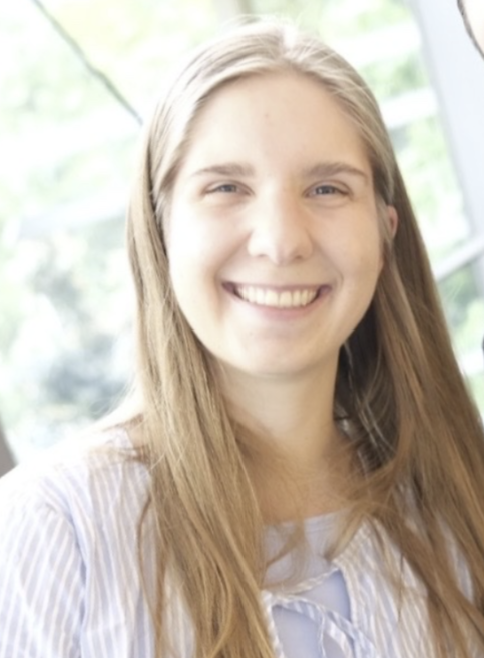
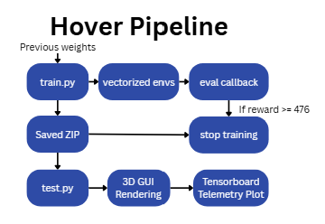
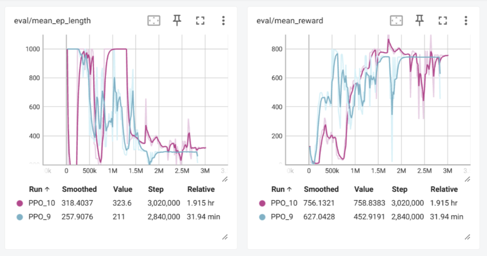

CNN evaluation
Confusion matrix of the CNN evaluation on the test set.




Transmission line installation is one of the most dangerous jobs in electrical infrastructure. Inspired by the MoE Groundwire Project, this work addresses a critical limitation: even when drones are involved, a human pilot remains in control while workers still climb 50-metre towers near live electrical lines, exposed to falls and electrocution.
Our solution uses AI to enable fully autonomous drone navigation on transmission towers. Using reinforcement learning, the drone navigates from ground level to an inspection point near the tower top, detecting and avoiding suspended wires and structures along the way — no human pilot required. A perception system provides real-time visual target localisation during the final approach, demonstrating a complete autonomous inspection pipeline.
The video below shows the drone navigating the environment.
Multi-Goal Navigation without Perceptual Alignment
Demonstration of the model successfully achieving all navigation goals despite degraded or shifted perception (trained on a randomized goal dataset).
Confusion matrix of the CNN evaluation on the test set.
The training pipeline begins in train.py where previous weights can be loaded to continue from a checkpoint. The environment is vectorised across multiple parallel instances to speed up data collection, with an eval callback monitoring performance throughout. Once the mean reward reaches the threshold of 476 the training stops and the best model is saved as a ZIP file. The saved model is then loaded in test.py for evaluation, which renders the drone in the 3D PyBullet GUI and logs telemetry data that can be visualised in TensorBoard.

Two training runs are compared above. PPO_9 (blue) trained on a single fixed goal at tower 2, while PPO_10 (pink) trained with all 8 goals randomised each episode. PPO_9 converges faster and reaches a higher peak reward early on, which is expected given it only needs to learn one target location. PPO_10 takes longer to stabilise and shows more variance throughout, reflecting the added difficulty of generalising across all towers. However PPO_10 finishes with a higher smoothed reward of 756 compared to 627, suggesting that despite the harder training distribution the multi-goal agent ultimately learns a more robust navigation policy. The episode length drop after 1M steps in both runs indicates the agent learning to reach the goal faster rather than timing out.

A custom ResNet18-based CNN was trained to detect the tower apex and wire endpoints directly from the drone's camera. A synthethic dataset was generated in PyBullet by randomising camera positions and projecting 3D targets into 2D coordinates. The trained model was integrated into the PPO navigation environment using a perception wrapper.
The current perception pipeline relies on perfect depth information from PyBullet simulator to deproject 2D image coordinates back into 3D space. In a physical deployment, depth sensors can be noisy and have blind spots. The dataset generation assumes the camera is roughly oriented towards the target area, the model may lose confidence or fail to detect targets during erratic flight movements or extreme camera angles not covered in the training distributions.
To make the perception system more robust, we would need to collect real drone images of the tower from various angles, lighting and distances to capture the true variability of the real world. Additionally, implementing temporal tracking across consecutive frames could help smooth out the CNN's 3D predictions and allow the drone to remember the target's estimated position even when it temporarily leaves the camera's field of view.
The PPO agent learned to navigate from the start position to the tower inspection point while avoiding poles and wires. The model converged successfully and reached the goal consistently. Perception was integrated for the final approach to the target.
The original environment included full tower detail with crossbeams, braces and support structures. This made training much harder. The drone would hesitate near the top of the tower and settle into a local optima instead of reaching the goal. Due to time constraints these elements were made visual only with no collision. This allowed the model to converge but is not the full intended design.
Training with the full tower structure as real obstacles would make the model more robust. A curriculum approach starting simple and gradually adding complexity would be the best way to achieve this. The perception system could also be improved by retraining the CNN on images from the drone's actual flight path so it can guide navigation from the very start.
The navigation task was split into two stages. The first was getting the drone to hover stably using a PPO agent trained with gravity compensation and damping, establishing a stable flight baseline. The second built on Rebecca's obstacle avoidance work by extending it to support multiple inspection goals across all four towers, rather than a single fixed target. This involved randomising the goal on every episode during training so the agent learned to navigate using the vector-to-target in its observation rather than memorising one specific location.
Early attempts controlled the drone using raw motor RPM values directly. This made learning extremely difficult as the agent had to discover the relationship between individual rotor speeds and stable flight from scratch, pid control led to much faster insights and flying ability. Integrating Claudia's CNN perception also proved difficult, the perception system operates in a separate module and only produces a 2D image prediction, which must be deprojected back into 3D world coordinates before the agent can use it. Timing this correctly during the episode, handling low-confidence predictions, and ensuring the predicted target stayed consistent with the normalised observation space added complexity.
The drone currently spawns near a fixed start position. Fully randomising the spawn location each episode would force the agent to rely entirely on its observation to navigate, making it far more robust and realistic for real deployment. Training with the full tower collision geometry restored would also be a next step once spawn randomisation is stable.
The environment was developed in PyBullet to represent a simplified electrical transmission tower inspection task. It includes multiple transmission poles, crossarms, suspended power lines, grass terrain, and visual start/goal markers. This environment provided the base world used by the PPO navigation and obstacle avoidance systems, allowing the drone to train and evaluate its ability to fly from a ground-level start point to inspection targets near the tower structures.
The visual environment was first created as a standalone PyBullet scene, then integrated into drone_env.py,
where it was extended with drone physics, collision checking, reward calculations, and multiple inspection goals.
Six goal positions were defined across the tower structures so the drone could be tested on multi-goal navigation
rather than only flying to a single fixed target.
The environment is still a simplified representation of a real transmission tower site. Some structural details, such as braces and support beams, are visual-only or simplified to reduce training difficulty. The terrain is also flat and does not include environmental factors such as wind, uneven ground, lighting variation, or sensor noise. These simplifications made the reinforcement learning task more achievable, but they reduce the realism of the simulation compared with a real-world inspection scenario.
Future work would involve making the environment more realistic by adding full collision geometry for all tower structures, more varied terrain, and additional inspection targets. A curriculum learning approach could be used, where the drone first trains in a simple version of the environment before gradually introducing more complex obstacles, tower details, and real-world disturbances.
@article{park2021nerfies,
author = {Park, Keunhong and Sinha, Utkarsh and Barron, Jonathan T. and Bouaziz, Sofien and Goldman, Dan B and Seitz, Steven M. and Martin-Brualla, Ricardo},
title = {Nerfies: Deformable Neural Radiance Fields},
journal = {ICCV},
year = {2021},
}